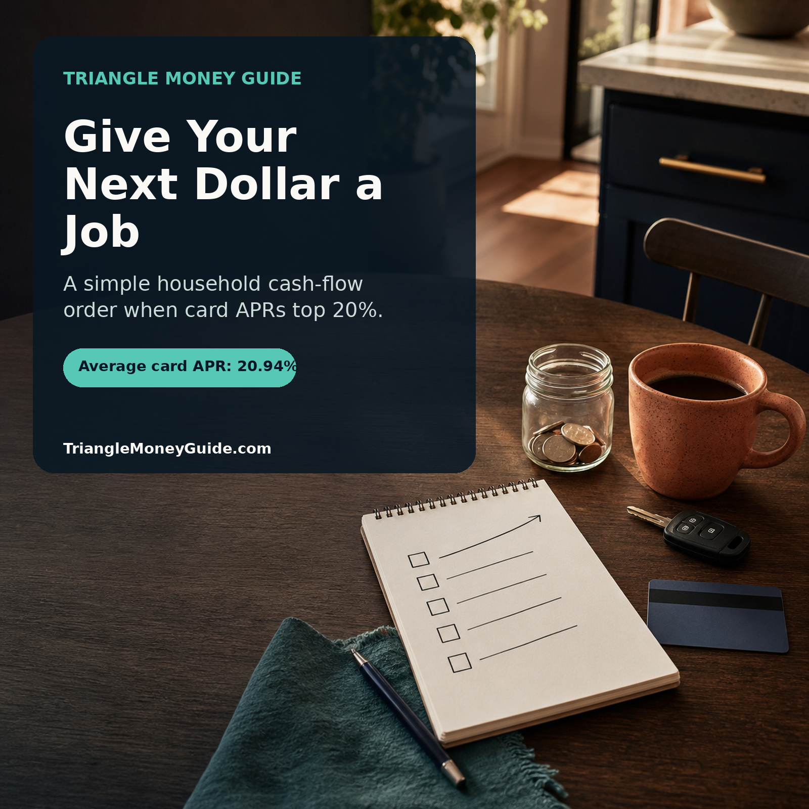

Credit card interest remains painfully high. Here is a practical, household-first order for bills, a cash buffer, debt payoff, and long-term saving.

When a credit card balance is charging more than 20% interest, it is easy to feel as if every money decision is urgent at once.
Should you pay extra on the card? Build savings? Catch up on retirement? Save for a family trip? Fix the car before it becomes a bigger problem?
The answer is not to solve every goal this month. It is to decide what the next available dollar needs to do first.
The Federal Reserve reported that the average APR on commercial-bank credit cards was 20.94% in May 2026. For cardholders who were actually being charged interest, the average was 22.15%.
At that rate, a balance can quietly turn ordinary expenses into a long-term drain on the household budget. But the solution is not always, “Put every last dollar toward debt.” A household with no cash buffer can pay down a card today and be forced to use it again next week when a tire blows out or the air conditioner fails.
Here is the order I would use for most Triangle households. It is not a one-size-fits-all commandment. It is a practical operating system for deciding what comes next.
Before extra debt payments, before investing more, before trying a new budgeting app, keep the basics current:
This is not glamorous, but it matters. A late fee, utility shutoff, lapsed insurance policy, or missed minimum payment can create a larger problem than the one you were trying to solve.
If you are behind on essentials, the first job of extra cash is to stop the immediate damage. Call the provider, ask about a payment arrangement, and get clear on the date that actually matters. Do not ignore a bill because the total feels overwhelming.
Once the essentials are covered, build a starter emergency fund.
For many households, $1,000 is a useful first target. It is not enough for every emergency, but it can cover a deductible, a tire, an urgent care bill, or a smaller appliance repair without automatically becoming new card debt.
Why put cash aside while you are paying 22% interest on a card?
Because life does not pause while you work the plan.
A Raleigh family that puts every spare dollar toward a card balance may feel great until a $700 car repair shows up. If they have no savings, the repair goes back on the same card. The balance climbs, the interest keeps running, and the household feels like it made no progress at all.
A starter buffer makes the debt-payoff plan stick.
If your employer matches part of your retirement contribution, contribute enough to receive the full match before sending every extra dollar to debt.
A match is part of your compensation. Walking away from it can mean walking away from money your employer is offering you.
This is not an argument for maxing out retirement accounts while high-interest balances pile up. It is a narrow step: get the available match, then return your attention to the expensive debt.
If your household is in a genuine short-term crisis, stabilize housing, food, insurance, and required payments first. The order always starts with keeping the household functioning.
After essentials, a starter buffer, and any employer match, direct your extra cash toward the highest-interest balance.
For most households, that means credit cards first.
The method is simple:
This is often called the debt avalanche method. It is mathematically efficient because it reduces the interest that is working against you.
If motivation is the bigger challenge, paying off the smallest balance first can also be reasonable. That is the debt snowball method. The important thing is not to pretend the two methods are identical. The avalanche usually costs less interest. The snowball can create a quick win that keeps some people engaged.
Choose the approach you will actually follow, then make it automatic.
A balance-transfer offer, personal loan, or consolidation plan can be helpful in the right situation. It can also give a household the feeling of progress without changing the spending or cash-flow problem underneath.
Before moving debt, ask:
A home equity line of credit may charge less than a card, but it turns unsecured debt into debt connected to your house. That deserves more thought than a quick online application.
Do not use retirement money as the default escape hatch either. Taxes, penalties, lost growth, and the risk of returning to debt later can make an early withdrawal much more expensive than it looks.
Once high-interest debt is gone, direct the freed-up payment into a larger emergency fund.
A useful long-term target is often three to six months of essential expenses. The right number depends on the household:
Do not get hung up on the perfect number. Start with one month of essentials, then build from there.
After you have a workable cash reserve and expensive debt under control, the next dollars can go toward the goals that make the household stronger over time:
This is where more complicated planning can be useful. Taxes, investment allocation, mortgage strategy, insurance, college funding, and estate planning all matter. But they work better when the household is not using a 22% credit card as its emergency fund.
Consider a Raleigh-Durham household with $7,000 in monthly take-home pay. Their fixed costs, groceries, transportation, child care, insurance, and minimum debt payments use most of the month. They have a $2,500 credit-card balance at 22% and only $200 in savings.
If they receive a $600 tax refund or bonus, putting all $600 onto the card feels efficient. But it leaves only $200 for the next surprise.
A more durable sequence might be:
The exact numbers will differ. The principle does not: keep one emergency from resetting the entire plan.
The New York Fed reported about $1.25 trillion in credit-card balances at the end of the first quarter of 2026. The Fed’s May consumer-credit data also showed revolving credit declining at a 4.7% annual rate, which is a reminder that national data moves around from month to month.
Your household does not need to wait for a national trend to improve before making a better decision with the next dollar.
Start with stability. Build the first buffer. Take the match if it is available. Aim extra cash at the most expensive debt. Then build the bigger cushion and the longer-term plan.
That is not a dramatic financial overhaul. It is a household cash-flow system that can keep ordinary setbacks from becoming years of expensive debt.
This article is for educational purposes only and is not personalized financial, tax, investment, or legal advice. The right order can change when a household faces eviction, utility shutoff, missed insurance, tax debt, medical hardship, or another immediate crisis. Consider working with a qualified professional who can review your complete situation before making major financial decisions.
Triangle Money Guide helps households in Raleigh, Durham, Cary, Apex, Chapel Hill, and surrounding communities make clearer money decisions. Schedule a consultation to talk through your household plan.
Written by Jonathan Parker | Schedule a free consultation